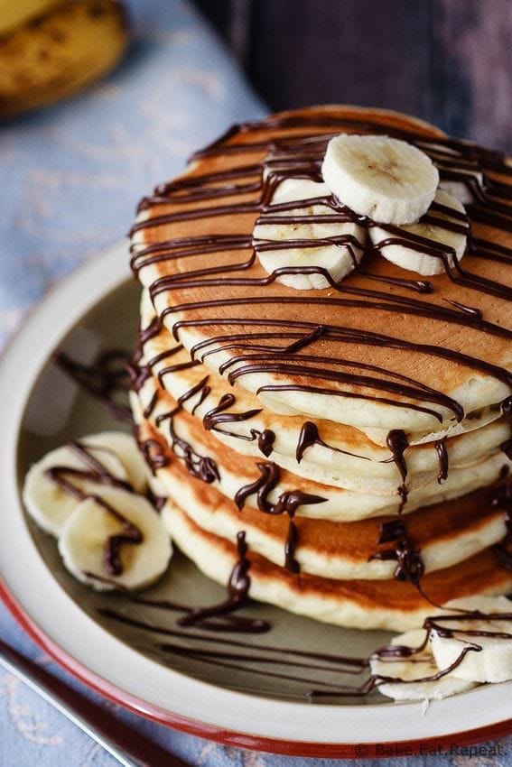
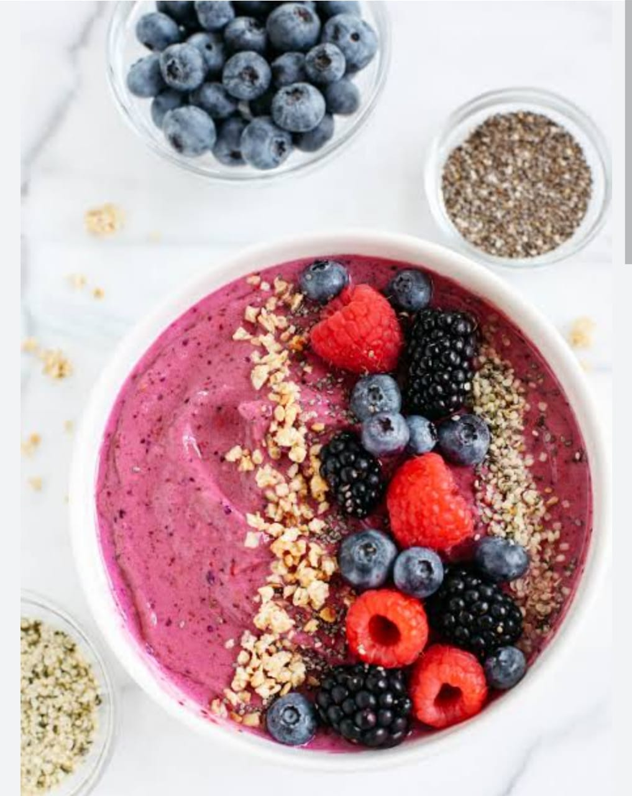
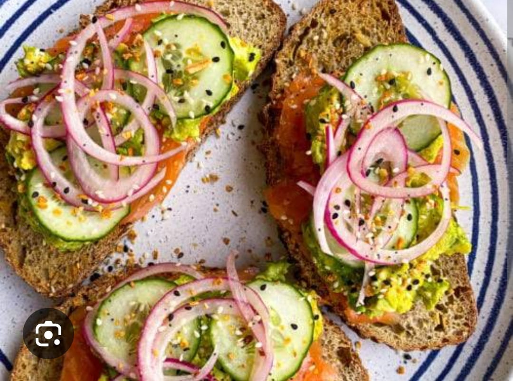
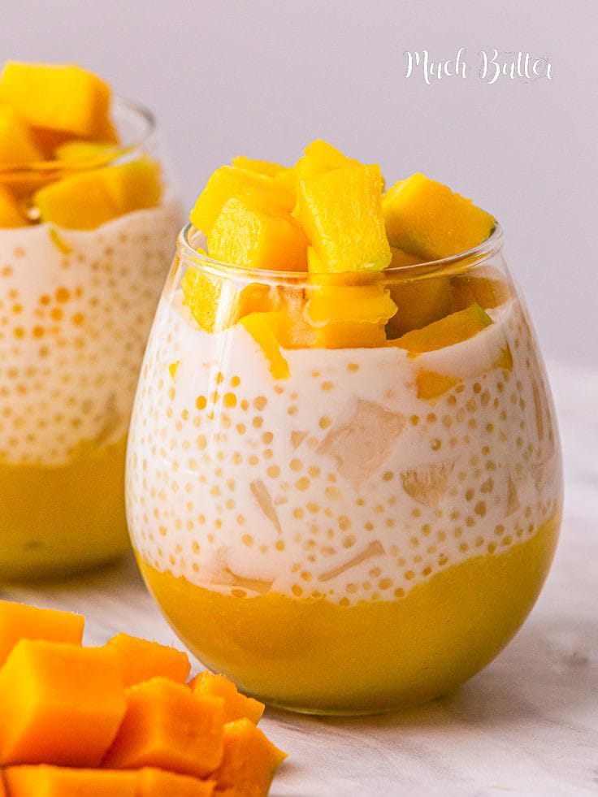
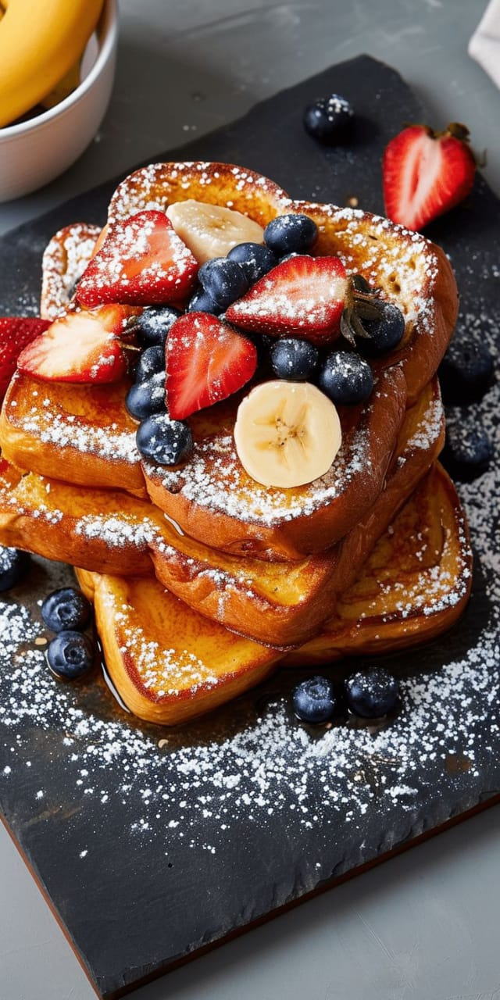

Eggless Pancakes

Ingredients:
- 2 cups maida (plain flour/refined flour)
- 2 tbsp sugar
- 1 tbsp baking powder
- ½ tsp baking soda
- A pinch of salt
- 2 tbsp butter, melted
- 1½ cups milk (adjust as needed)
- Butter for serving
- Honey or maple syrup for serving
Recipe:
- In a large mixing bowl, combine 2 cups of maida (plain flour). You can also use wheat flour (atta) for a healthier alternative.
- Add 2 tbsp sugar, 1 tbsp baking powder, ½ tsp baking soda, and a pinch of salt. Mix all the dry ingredients thoroughly.
- Add 2 tbsp of melted butter and 1 cup of milk to the dry ingredients. Whisk the mixture until it is well combined.
- Add an additional ½ cup of milk, mixing it in gradually until you have a smooth, flowing batter. Adjust the consistency by adding more milk if necessary.
- Heat a non-stick pan or griddle over medium heat. Grease the surface with a little butter.
- Pour a ladleful of the pancake batter onto the pan. Avoid spreading it out with a spoon; let the batter spread naturally.
- Cook for 2 minutes or until small bubbles appear on the surface of the pancake.
- Flip the pancake and cook for another 1-2 minutes until the other side is golden brown and cooked through.
- Serve the eggless pancakes warm with a dollop of butter and drizzle with honey or maple syrup for extra sweetness.
Additional Tips:
- For a fluffier texture, you can add 1 tbsp of cornstarch to the dry ingredients.
- If you prefer a vegan option, substitute milk with almond or soy milk and use a plant-based butter alternative.
- Feel free to add fruits like banana slices or berries to the batter for a fruity twist.
Berry Smoothie Bowl

Ingredients:
- 1 cup frozen mixed berries (strawberries, blueberries, raspberries)
- 1 ripe banana (frozen for a thicker texture)
- 1/2 cup Greek yogurt (or plant-based yogurt for a vegan option)
- 1/4 cup almond milk (or any milk of choice)
- 1 tablespoon honey or maple syrup (optional)
- 1/4 cup granola
- Fresh fruits for topping (e.g., banana slices, strawberries, blueberries)
- Chia seeds or flaxseeds for topping (optional)
Recipe:
- In a blender, combine the frozen mixed berries, frozen banana, Greek yogurt, almond milk, and honey or maple syrup (if using).
- Blend until smooth and creamy, scraping down the sides of the blender as needed. Add more almond milk if the mixture is too thick.
- Pour the smoothie mixture into a bowl, smoothing the top with a spoon to make a flat surface.
- Top the smoothie bowl with granola, fresh fruit, chia seeds, and any other desired toppings.
- Serve immediately with a spoon and enjoy your refreshing, nutrient-packed smoothie bowl!
Additional Tips:
- For extra protein, add a scoop of protein powder or nut butter to the blender.
- If you prefer a thicker smoothie bowl, use less milk or more frozen fruits.
- Feel free to mix in spinach or kale for a green smoothie bowl, and it will still taste amazing!
- Experiment with other toppings such as coconut flakes, pumpkin seeds, or cacao nibs.
Eggless Avocado Toast

Ingredients:
- 2 slices of whole-grain or sourdough bread (or your choice of bread)
- 1 ripe avocado
- 1 tablespoon olive oil (optional for extra creaminess)
- 1/2 teaspoon lemon juice (or lime juice)
- Salt and pepper to taste
- Red pepper flakes (optional for heat)
- Chopped fresh herbs (e.g., cilantro, parsley, or chives) for garnish
- Cherry tomatoes or radishes for topping (optional)
Recipe:
- Start by toasting the slices of bread until they are golden brown and crispy.
- While the bread is toasting, scoop out the flesh of the ripe avocado and place it into a small bowl.
- Add 1 tablespoon of olive oil (optional) and 1/2 teaspoon of lemon juice to the mashed avocado. Mash everything together with a fork until smooth and creamy. You can leave it a little chunky for texture, depending on your preference.
- Season the avocado mixture with salt and pepper to taste. For an extra kick, sprinkle in some red pepper flakes.
- Once the bread is toasted, spread the mashed avocado mixture generously over each slice of toast.
- Top with your choice of fresh toppings like chopped herbs, sliced cherry tomatoes, or thin radish slices for added flavor and crunch.
- Serve immediately and enjoy this healthy, eggless, and delicious avocado toast!
Additional Tips:
- If you like your avocado toast to be extra creamy, you can add a dollop of vegan cream cheese or a spoonful of hummus.
- For added protein, top with roasted chickpeas or a sprinkle of hemp seeds.
- If you're feeling adventurous, try adding a drizzle of balsamic glaze or hot sauce on top.
- For a variation, you can add mashed peas or a layer of tomato slices before the avocado for a different twist.
Chia Pudding with Mango

Ingredients:
- 3 tablespoons chia seeds
- 1 cup coconut milk (or any milk of your choice)
- 1 tablespoon maple syrup or honey (optional)
- 1/2 teaspoon vanilla extract
- 1 ripe mango, peeled and diced
- Fresh mint leaves for garnish (optional)
Recipe:
- In a medium-sized bowl, combine the chia seeds, coconut milk, maple syrup (or honey), and vanilla extract. Stir well to combine.
- Cover the bowl and refrigerate for at least 2-3 hours, or overnight. Stir once halfway through the chilling time to prevent the chia seeds from clumping.
- Once the chia pudding has thickened, spoon it into serving bowls.
- Top with fresh mango cubes and garnish with mint leaves, if desired.
- Serve chilled and enjoy a refreshing, healthy breakfast or snack!
Additional Tips:
- You can prepare the chia pudding the night before for a quick and easy breakfast the next morning.
- Feel free to experiment with different fruits like berries, kiwi, or pineapple.
- If you like your pudding sweeter, add more maple syrup or a dash of cinnamon.
Eggless French Toast

Ingredients:
- 4 slices of bread (preferably thick-cut or whole grain)
- 1 cup almond milk (or any plant-based milk)
- 1 tbsp ground flaxseeds (mixed with 3 tbsp water for flax "egg")
- 1 tbsp vanilla extract
- 1 tbsp cinnamon powder
- 1 tbsp maple syrup or sugar
- Pinch of salt
- Butter or oil for frying
- Fresh fruit, powdered sugar, or syrup for serving
Recipe:
- In a bowl, mix 1 tablespoon of ground flaxseeds with 3 tablespoons of water and let it sit for 5-10 minutes to thicken (this will act as the egg substitute).
- In another bowl, combine the almond milk, vanilla extract, cinnamon powder, maple syrup (or sugar), and the flax mixture. Whisk until smooth.
- Heat a skillet or griddle over medium heat and add a little butter or oil to grease it.
- Dip each slice of bread into the milk mixture, ensuring both sides are coated.
- Place the coated bread slices on the skillet and cook for 2-3 minutes per side, until golden brown and crispy.
- Serve immediately with your choice of toppings: fresh fruit, powdered sugar, or a drizzle of maple syrup.
Additional Tips:
- If you prefer a fluffier texture, use a thicker bread like challah or brioche (vegan versions).
- Top with whipped coconut cream or a sprinkle of cinnamon sugar for extra flavor.
- For a savory version, add nutritional yeast or plant-based cheese to the dipping mixture.